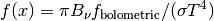
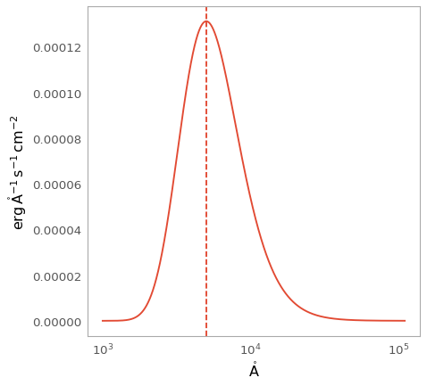

BlackBody1D¶
-
class
astropy.modeling.blackbody.BlackBody1D(temperature=<Quantity 5000.0 K>, bolometric_flux=<Quantity 1.0 erg / (cm2 s)>, **kwargs)[source] [edit on github]¶ Bases:
astropy.modeling.Fittable1DModelOne dimensional blackbody model.
Parameters: temperature :
QuantityBlackbody temperature.
bolometric_flux :
QuantityThe bolometric flux of the blackbody (i.e., the integral over the spectral axis).
Notes
Model formula:

Examples
>>> from astropy.modeling import models >>> from astropy import units as u >>> bb = models.BlackBody1D() >>> bb(6000 * u.AA) <Quantity 1.3585381201978953e-15 erg / (cm2 Hz s)>
import numpy as np import matplotlib.pyplot as plt from astropy.modeling.models import BlackBody1D from astropy.modeling.blackbody import FLAM from astropy import units as u from astropy.visualization import quantity_support bb = BlackBody1D(temperature=5778*u.K) wav = np.arange(1000, 110000) * u.AA flux = bb(wav).to(FLAM, u.spectral_density(wav)) with quantity_support(): plt.figure() plt.semilogx(wav, flux) plt.axvline(bb.lambda_max.to(u.AA).value, ls='--') plt.show()
Attributes Summary
bolometric_fluxinput_unitsinput_units_allow_dimensionlessinput_units_equivalencieslambda_maxPeak wavelength when the curve is expressed as power density. param_namestemperatureMethods Summary
evaluate(x, temperature, bolometric_flux)Evaluate the model. Attributes Documentation
-
bolometric_flux¶
-
input_units¶
-
input_units_allow_dimensionless= True¶
-
input_units_equivalencies= {'x': [(Unit("m"), Unit("Hz"), <function spectral.<locals>.<lambda>>), (Unit("m"), Unit("J"), <function spectral.<locals>.<lambda>>), (Unit("Hz"), Unit("J"), <function spectral.<locals>.<lambda>>, <function spectral.<locals>.<lambda>>), (Unit("m"), Unit("1 / m"), <function spectral.<locals>.<lambda>>), (Unit("Hz"), Unit("1 / m"), <function spectral.<locals>.<lambda>>, <function spectral.<locals>.<lambda>>), (Unit("J"), Unit("1 / m"), <function spectral.<locals>.<lambda>>, <function spectral.<locals>.<lambda>>), (Unit("1 / m"), Unit("rad / m"), <function spectral.<locals>.<lambda>>, <function spectral.<locals>.<lambda>>), (Unit("m"), Unit("rad / m"), <function spectral.<locals>.<lambda>>), (Unit("Hz"), Unit("rad / m"), <function spectral.<locals>.<lambda>>, <function spectral.<locals>.<lambda>>), (Unit("J"), Unit("rad / m"), <function spectral.<locals>.<lambda>>, <function spectral.<locals>.<lambda>>)]}¶
-
lambda_max¶ Peak wavelength when the curve is expressed as power density.
-
param_names= ('temperature', 'bolometric_flux')¶
-
temperature¶
Methods Documentation
-
evaluate(x, temperature, bolometric_flux)[source] [edit on github]¶ Evaluate the model.
Parameters: x : float,
ndarray, orQuantityFrequency at which to compute the blackbody. If no units are given, this defaults to Hz.
temperature : float,
ndarray, orQuantityTemperature of the blackbody. If no units are given, this defaults to Kelvin.
bolometric_flux : float,
ndarray, orQuantityDesired integral for the blackbody.
Returns: y : number or ndarray
Blackbody spectrum. The units are determined from the units of
bolometric_flux.
-
{kind=link}
{kind=link}